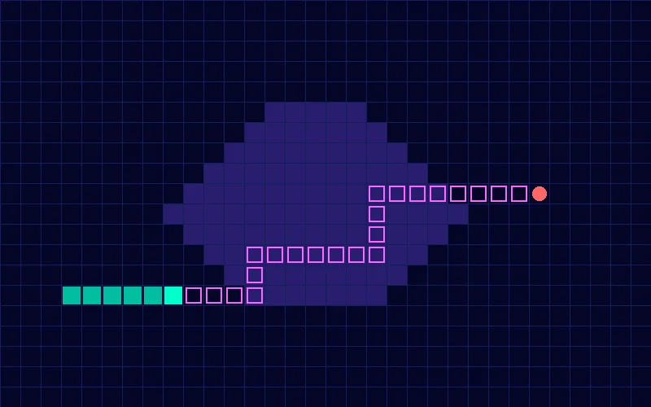

Algorithms · game AI · Python + Pygame
Snake*Search
A Snake game that plays itself. It uses A* search to find the shortest path to the food while steering around obstacles and its own growing body.

From curiosity to code
The project started with a simple question: how do game characters find their way around complex environments so efficiently? While studying distributed systems and graph algorithms I got interested in pathfinding methods like DFS, BFS and Dijkstra's algorithm. A* search stood out because it combines a heuristic with the actual path cost, which balances speed and accuracy.
Initial goals
- Build a self-playing Snake game using A*.
- Compare its efficiency against other algorithms. Time constraints later narrowed the project to A* only.
- Learn Pygame so I could connect the theory to something I could see running.
Phase 1: the basic snake
I started from a Pygame tutorial (Coder Space, 2022) to build the core mechanics:
- Snake movement on a grid, with WASD controls.
- Food spawning at random coordinates.
- Collision detection for walls and the snake's own body.
Early struggle: the movement felt rigid, and to make the snake autonomous I had to replace player input with algorithmic decision-making.
The original game, played with manual controls.
Phase 2: adding A*
Grid as a graph
I treated the game window as a graph where each grid position is a node, with up/down/left/right neighbours and a Manhattan-distance heuristic.
Path calculation
A* finds the shortest path from the head to the food, avoiding the snake's body (snake_body) and randomly placed obstacles (obstacle_positions).
Dynamic adaptation
The path is recalculated after every move so it accounts for the growing body.
The breakthrough
def A_Star(start, goal, grid_size, snake_body, obstacle_positions): open_set = {start} came_from = {} # Tracks the optimal path g_score = {start: 0} # Cost from start f_score = {start: m_distance(start, goal)} # Estimated total cost ...
Challenges and iterations
Food inside obstacles
Food sometimes spawned inside an obstacle, causing instant collisions. I added validation that regenerates the food until it lands somewhere valid.
Slow when long
A* slowed down as the snake grew and had more segments to avoid. I limited recalculation to every N frames and prioritised recent moves.
Hard to debug
Paths were hard to debug without seeing them, so I drew temporary debug lines for A*'s chosen path and removed them from the final version.
Polishing the game
- Assets: replaced the plain rectangles with pixel-art sprites for the snake, food and obstacles.
- Tuning: adjusted the snake's speed (
time_step) and the obstacle density. - Scoring: +10 points per food, reset on collision.
In the final version the snake navigates to food on its own while dodging obstacles and its tail. Obstacles reset on every game over, so each run is different.
A* steering the snake automatically in the Pygame version.
Try it yourself
I rebuilt the game in JavaScript so it runs here. In AI mode the faint dots show the path A* has planned. Collect the pink food and avoid the red X obstacles and the walls.
Score: 0
How to play
- AI mode: watch A* steer the snake through the obstacles to the food.
- Player mode: steer with WASD or the arrow keys, or swipe on the board on a phone.
- Restart: press AI mode or Player mode after a game over.
What I learned
Textbooks skip edge cases
The textbook version of A* didn't account for real edge cases like dead ends. Debugging made me properly understand heuristic trade-offs.
Narrowing scope
I dropped the plan to compare several algorithms because of time, but working deeply on A* alone taught me more about optimisation.
Polish matters
Even a technical demo benefits from polish like sprites and a score display.
Snake*Search went from a simple coding exercise to a close look at algorithmic decision-making. It improved my Python, Pygame and heuristic design, taught me to work through problems iteratively, and showed me that a classic game can be a good way into computational thinking.
What I'd do next
- Learning AI: replace A* with Q-learning so the snake learns from its mistakes.
- Multi-algorithm mode: let players switch between A*, Dijkstra and BFS and see the differences in real time.
- Hardware: port the game to a Raspberry Pi and connect it to a physical robotic snake.